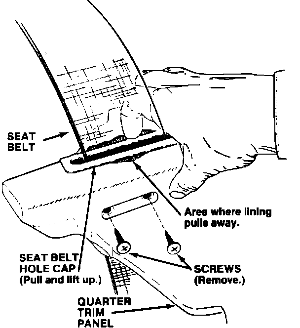
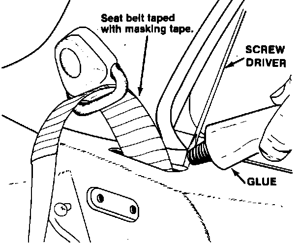

Rear Seat Belt - Hole Cap Replacement
August 31, 198787-020
YEAR: 1987
MODEL: LEGEND COUPE
APPLICATION: up to vin KA3HC005344
Rear Seat Belt Hole Caps Replacement (Supersedes 87-020, dated July 13, 1987)
SYMPTOM
The rear quarter trim panel lining pulls away, from the seat belt hole caps.
CORRECTIVE ACTION
Glue the vinyl back in position and replace both rear seat belt hole caps.
1. Remove the rear seat-back bolts (see Service Manual, page 20-44). Lift the seat-back and carefully pull it forward.
CAUTION:
Avoid scratching the seat cushion with the hooks on the bottom of the seat-back.

2. Remove the two screws from both quarter trim panels.
3. Remove the seat belt hole caps using your fingers to pull the cap's outside edge inward, then lift-up.
4. Fit the new seat belt hole caps into position to make sure they fully cover the exposed areas. If the fit is correct, remove the caps and proceed to step 5. If the area is still exposed, replace the entire quarter trim panel.
5. Pull out approximately six inches of seat belt and tape it with masking tape so it doesn't get soiled.

6. Use small amounts of Honda Weatherstrip Cement P/N 08712-5500002OE or equivalent, to glue the vinyl back down.
7. Install the new seat belt hole caps and secure them with the screws.
8. Reinstall the rear seat-back.
Note:
Make sure the seat belts are placed in front of the seat-back and check that they function properly.
PARTS INFORMATION
Seat belt hole cap:
R. RR (black) 83733-SG0-000ZA
R. RR (brown) 83733-SG0-000ZB
L. RR (black) 8-3783-SG0-000ZA
L. RR (brown) 83783-SG0-000ZB
Quarter trim panel R. RR:
Std. (black) 83730-SG0-A00ZA
Std. (brown) 83730-SG0-A00ZB
L, LS (black) 83730-SG0-A10ZA
L, LS (brown) 83730-SG0-A10ZB
Quarter trim panel L RR:
Std. (black) 83780-SG0-A00ZA
Std. (brown) 83780-SG0-A00ZB
L, LS (black) 83780-SG0-A00ZA
L, LS (brown) 83780-SG0-A10ZB
WARRANTY CLAIM INFORMATION
Failed part number: 83-33-SG0-0007A
Defect code: 035
Operation number for cap replacement both sides: 845112
Flat rate time for cap replacement both sides: 0.5
Contention code: A99
[NEW] Operation number for quarter trim panel replacement:
one side: 845102
other side: 845102A
Flat rate time for quarter trim panel replacement:
one side: 0.6
other side: add 0.3
Contention code: A99